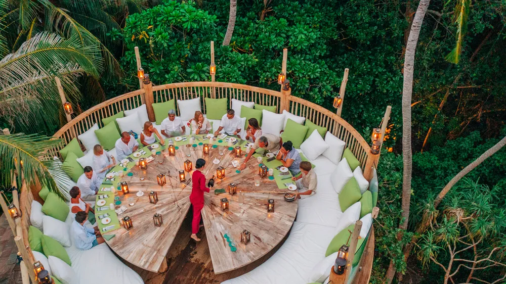

Geographical Location: Asia
Maldives is an archipelagic state and country in South Asia, situated in the Indian Ocean. It lies southwest of Sri Lanka and India, about 750 kilometres (470 miles; 400 nautical miles) from the Asian continent's mainland. The Maldives' chain of 26 atolls stretches across the equator from Ihavandhippolhu Atoll in the north to Addu Atoll in the south.
Maldives offers such an incredible combination of dazzling beaches, cerulean waters and fantastic diving that its opening up to travelers without limitless financial resources is definitely a cause for celebration.
Photo Gallery
Maldives offers wonderful dining experience

Exploring the gorgeous reefs of Maldives

One of several maldivian hotels, all built right over the ocean.

Lazy days on the beach

Biological splendors on the island shores